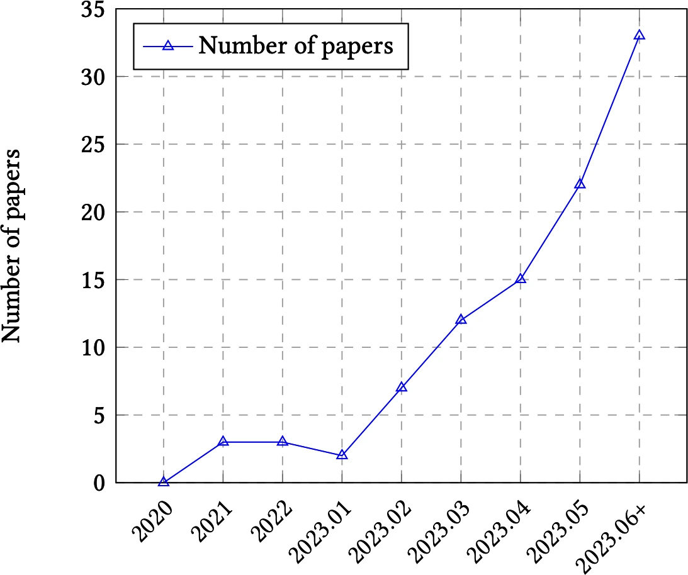
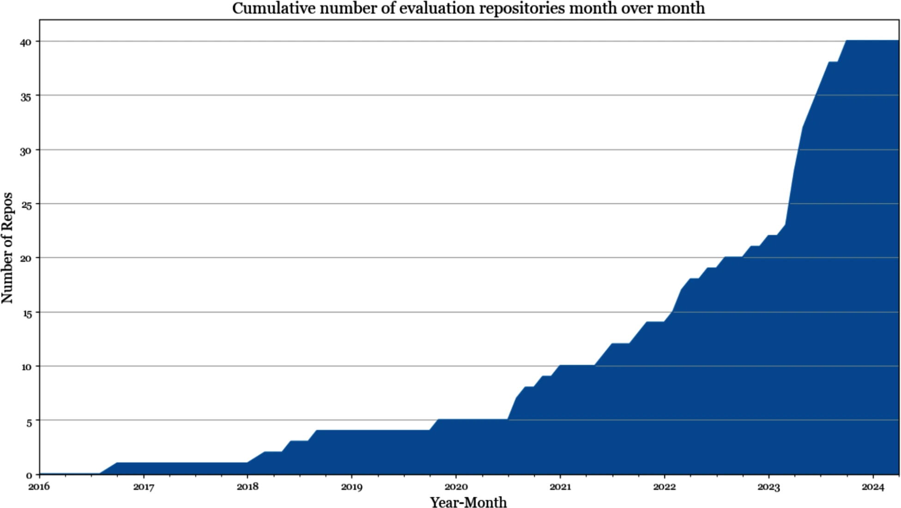
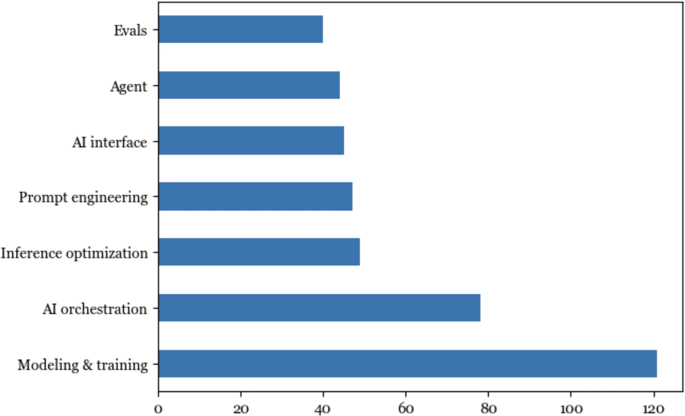
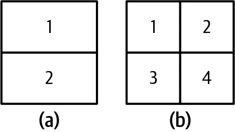
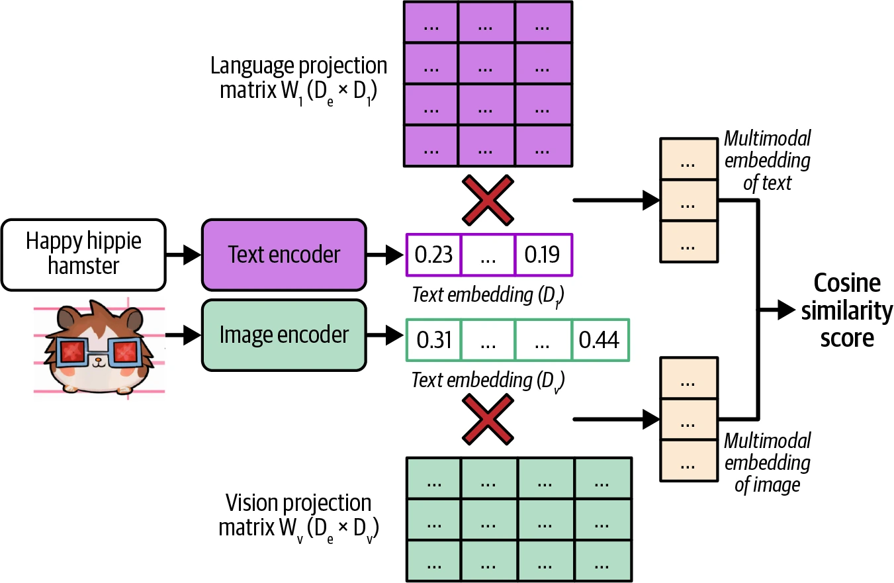
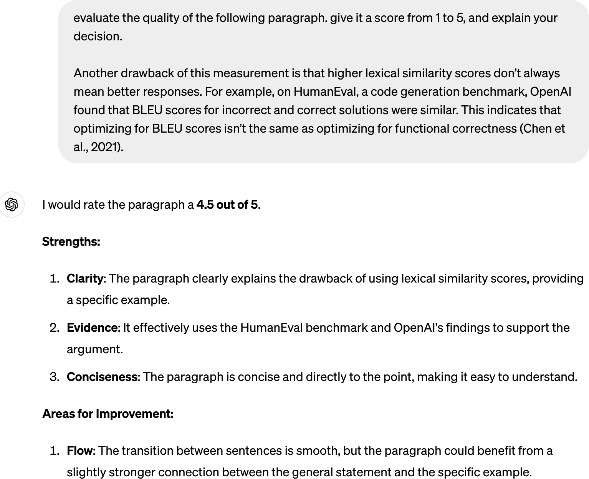
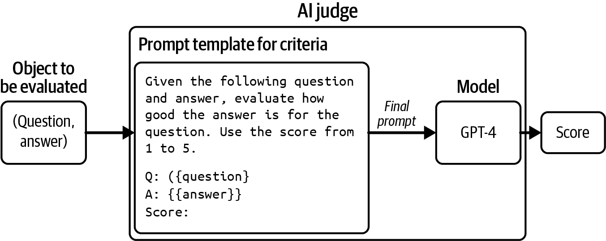
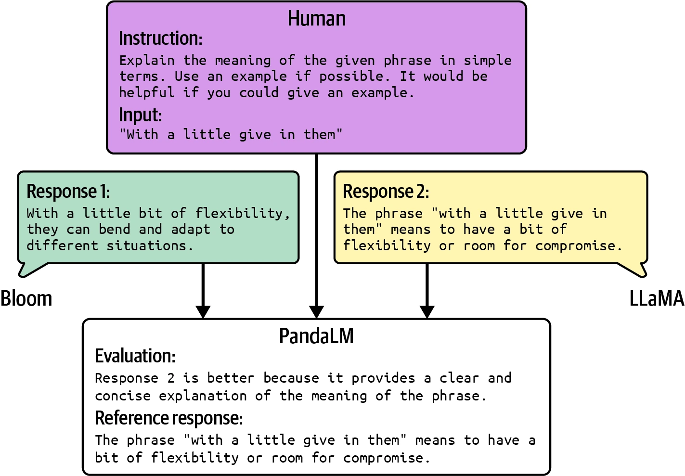
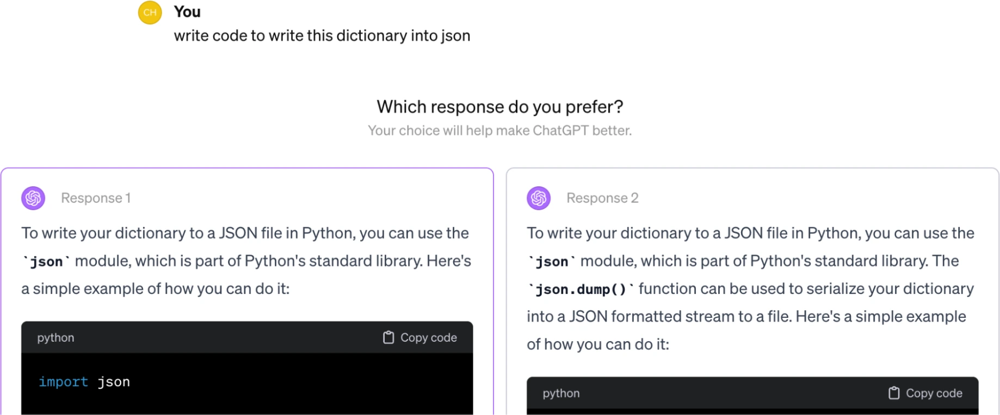

Chapter 3
评估方法论
Evaluation Methodology
评估决定 AI 能否安全落地
Introduction
AI 使用得越多，灾难性失败的机会就越多。基础模型出现不久，我们已经看到许多失败：一名男子在聊天机器人鼓励后自杀；律师提交了 AI 幻觉出来的虚假证据；加拿大航空的 AI 聊天机器人向乘客提供错误信息后，公司被判赔偿。如果没有办法控制 AI 输出的质量，对许多应用来说，AI 的风险可能会超过它的收益。
团队争相采用 AI 时，许多人很快发现，把 AI 应用变为现实的最大障碍是评估。对某些应用，弄清楚怎样评估可能占去大部分开发工作。由于评估既重要又复杂，本书用两章讨论它。本章介绍评估开放式模型的不同方法、这些方法怎样工作以及各自的局限；下一章则关注怎样用这些方法为应用选择模型，并搭建评估应用的评估流水线。
虽然本书把评估单列成章，评估仍必须放在整个系统的语境中考虑，而不能孤立进行。评估的目标是降低风险、发现机会。为了降低风险，首先要找出系统最可能失败的位置，再围绕这些位置设计评估。这往往要求重新设计系统，提高失败的可观测性。如果不清楚系统会在哪里失败，再多指标和工具也无法让系统变得稳健。
在深入评估方法之前，必须先承认基础模型评估的困难。正因为困难，许多人满足于口耳相传——例如听别人说模型 X 很好——或仅凭肉眼浏览结果，也就是所谓的“凭感觉检查”。这会带来更多风险，也会拖慢应用迭代。我们需要投资系统化评估，才能让结果更可靠。
许多基础模型包含语言模型组件，因此本章先快速介绍用于评估语言模型的指标，包括交叉熵和困惑度。这些指标是指导语言模型训练和微调的基础，也频繁出现在许多评估方法中。
基础模型的开放性使评估格外困难，本章将讨论应对它的最佳实践。对许多应用，人类评估者仍不可或缺；但人工标注缓慢而昂贵，因此目标是尽可能自动化。本书重点关注自动评估，包括精确评估和主观评估。
主观评估中正在快速崛起的是“AI 作为评委”：让 AI 评价 AI 的回答。它之所以主观，是因为分数取决于评委采用什么模型和提示。这个方法在行业内迅速普及，也遭到强烈反对——反对者认为 AI 还不够可信，不能承担如此重要的任务。作者尤其期待深入讨论这一争议。
评估基础模型的挑战
Challenges of Evaluating Foundation Models
评估 ML 模型一直很难；基础模型的出现让它变得更难。基础模型比传统 ML 模型更难评估，主要有以下几项原因。
第一，AI 模型越聪明，就越难评估。大多数人都能判断一年级学生的数学解答是否错误，却很少有人能判断博士级数学解答。一本书的摘要如果全是胡话，很容易看出很差；如果文字连贯，判断就难得多。为了验证摘要质量，你可能要先读完整本书。由此还有一个推论：复杂任务的评估会耗费多得多的时间。不能再只凭回答听起来怎样下结论，还要核查事实、开展推理，甚至引入领域专家。
第二，基础模型输出开放，削弱了传统的“对照真值”评估方式。传统 ML 任务大多是封闭式的。例如分类模型只能在预设类别中输出，预期类别是 X、模型输出 Y，就能明确判错。开放式任务则不同：同一个输入可能有大量正确回答，不可能整理一份穷尽所有正确输出的清单来比较。
第三，大多数基础模型被当作黑盒。一种原因是模型供应商不愿公开细节，另一种原因是应用开发者没有足够专业知识理解它们。模型架构、训练数据和训练过程等细节能揭示许多优缺点；没有这些信息，就只能通过观察输出来评估模型。
与此同时，公开评估基准已被证明不足以评估基础模型。理想的基准应覆盖模型能力的完整范围，并随着 AI 进步不断演进。模型拿到满分后，基准就对它“饱和”了，而基础模型让基准很快饱和：2018 年发布的 GLUE 仅一年后就饱和，2019 年不得不推出 SuperGLUE；NaturalInstructions（2021）被 Super-NaturalInstructions（2022）替代；早期基础模型常用的 MMLU（2020）也在很大程度上被 MMLU-Pro（2024）取代。
最后，通用模型扩大了评估范围。对任务专用模型，评估只需测量模型在训练任务上的表现；对通用模型，既要评估已知任务，还要发现模型能完成的新任务，其中甚至可能包括超出人类能力的任务。评估因此多了一项责任：探索 AI 的潜能与边界。
好消息是，新挑战催生了大量新方法和新基准。2023 年上半年，LLM 评估论文的月发表量从每月 2 篇增至接近 35 篇，呈指数式增长，如图 3-1。

作者按 GitHub 星标数分析了最热门的 1,000 个 AI 相关仓库，发现截至 2024 年 5 月，有 50 多个仓库专门用于评估。按创建日期绘制这些仓库的数量后，增长曲线同样近似指数形，如图 3-2。
坏消息是，虽然人们更关注评估，但与 AI 工程流水线的其他环节相比，关注仍然不足。DeepMind 的 Balduzzi 等人在论文中指出：相较于算法开发，评估开发很少获得系统性关注。实验结果几乎只用于改进算法，很少反过来改进评估。Anthropic 也认识到投入不足，呼吁政策制定者增加政府资金和拨款，用于开发新评估方法并分析既有评估的稳健性。

评估工具的数量也远少于建模与训练工具、AI 编排工具，进一步说明评估投入落后于 AI 领域其他环节，如图 3-3。
投入不足会造成基础设施不足，使系统化评估难以执行。作者询问团队怎样评估 AI 应用时，很多人说只是肉眼看看结果。许多人会保留一小组惯用提示评估模型，但提示的整理过程非常随意，通常源自整理者个人经验，而不是应用需求。项目刚起步时也许能这样做，但这不足以支撑应用迭代。本书关注的是系统化评估方法。

理解语言建模指标
Understanding Language Modeling Metrics
基础模型由语言模型演化而来，许多基础模型至今仍以语言模型为主要组件。这些模型中，语言模型组件的表现通常与基础模型在下游应用中的表现高度相关（Liu 等，2023），所以粗略理解语言建模指标有助于理解下游表现。
第 1 章提到，语言建模已有数十年历史，Claude Shannon 1951 年的论文《印刷英语的预测与熵》让它广为人知。指导语言模型开发的指标从那时起并没有太大变化。大多数自回归语言模型使用交叉熵或其近亲困惑度训练；阅读论文和模型报告时，还会遇到每字符比特数（BPC）和每字节比特数（BPB），两者都是交叉熵的变体。
交叉熵、困惑度、BPC 和 BPB 四者密切相关。只要信息充分，知道一个指标就可以推算另外三个。虽然这里称它们为语言建模指标，它们同样适用于任何生成词元序列的模型，包括生成非文本词元的模型。
语言模型编码语言的统计信息，即给定上下文时某个词元出现的概率。面对“I like drinking __”，下一个词是“tea”的可能性高于“charcoal”。模型捕获的统计信息越多，预测下一个词元就越准确。
用 ML 的说法，语言模型学习训练数据的分布。学得越好，就越能预测训练数据接下来出现什么，训练交叉熵也越低。和所有 ML 模型一样，不能只关心训练数据上的表现，还要关心生产数据。一般来说，数据越接近模型训练数据，模型在这些数据上就越可能表现良好。
相比本书其他部分，本节数学内容较多。如果觉得难，可以跳过推导，重点看这些指标该怎样解释。即使不亲自训练或微调语言模型，理解这些指标也能帮助选择应用模型；本书后续还会把它们用于部分评估与数据去重技术。
熵
Entropy
熵衡量一个词元平均携带多少信息。熵越高，每个词元携带的信息越多，表示一个词元所需的比特也越多。
用一个简单例子说明。设想创造一种语言来描述正方形里的位置，如图 3-4。如果语言只有两个词元——图中的（a）——每个词元只能告诉你位置在上半部还是下半部。两个词元只需 1 个比特表示，因此这种语言的熵是 1。

如果语言有四个词元——图中的（b）——每个词元可以指出更具体的位置：左上、右上、左下或右下。不过四个词元需要 2 个比特表示，所以熵是 2。这种语言的熵更高，每个词元信息更多，但表示每个词元也需要更多比特。
直观上，熵衡量预测一种语言接下来出现什么有多难。语言的熵越低——每个词元携带的信息越少——语言越可预测。前例中，只有两个词元的语言比四个词元的语言更容易预测。类似地，如果你能完美预测作者接下来要说什么，他说的话就没有带来任何新信息。
交叉熵
Cross Entropy
在数据集上训练语言模型，目标是让模型学会训练数据的分布，也就是预测训练数据接下来出现什么。语言模型在某个数据集上的交叉熵，衡量该模型预测这个数据集后续内容有多困难。
模型在训练数据上的交叉熵取决于两项性质：
- 训练数据本身的可预测性，由训练数据的熵衡量；
- 语言模型捕获的分布偏离训练数据真实分布的程度。
熵和交叉熵共享数学记号 H。设 P 是训练数据的真实分布，Q 是语言模型学到的分布，则训练数据的熵为 H(P)。Q 相对 P 的偏差可用 Kullback–Leibler（KL）散度 DKL(P∥Q) 衡量。因此模型相对训练数据的交叉熵为：
H(P,Q) = H(P) + DKL(P∥Q)
交叉熵不对称：Q 相对 P 的交叉熵 H(P,Q)，不同于 P 相对 Q 的交叉熵 H(Q,P)。
语言模型训练的目标是最小化其相对训练数据的交叉熵。如果模型完美学会训练数据，模型交叉熵就恰好等于训练数据的熵，此时 DKL(P∥Q) 为 0。可以把模型交叉熵理解为它对训练数据熵的近似。
每字符比特数与每字节比特数
Bits-per-Character and Bits-per-Byte
熵和交叉熵的一个单位是比特。如果语言模型的交叉熵为 6 比特，表示模型需要 6 比特表示每个词元。
不同模型使用不同词元化方法——例如一个模型以单词为词元，另一个以字符为词元——所以每词元比特数无法跨模型比较。有人改用每字符比特数（BPC）。若每词元 6 比特，而每个词元平均由 2 个字符组成，则 BPC = 6 / 2 = 3。
BPC 的难点是字符编码方案不同。例如 ASCII 每个字符用 7 比特，而 UTF-8 的一个字符可使用 8 到 32 比特。更标准化的指标是每字节比特数（BPB），即语言模型表示原始训练数据的一个字节需要多少比特。若 BPC 为 3、每字符 7 比特（即 7/8 字节），则 BPB = 3 ÷ (7/8) = 3.43。
交叉熵还能说明语言模型压缩文本的效率。BPB 为 3.43 意味着模型可以用 3.43 比特表示原始的每个 8 比特字节，因此能把原始训练文本压缩到不足原大小的一半。
困惑度
Perplexity
困惑度是熵或交叉熵的指数，常缩写为 PPL。给定真实分布为 P 的数据集，其困惑度定义为：
PPL(P) = 2H(P)
学得分布为 Q 的语言模型在该数据集上的困惑度为：
PPL(P,Q) = 2H(P,Q)
如果交叉熵衡量模型预测下一个词元有多难，困惑度就衡量预测时存在多少不确定性。不确定性越高，下一个词元的可能选项就越多。
假设某个语言模型完美编码了图 3-4（b）的四个位置词元，其交叉熵为 2 比特。模型预测正方形中的位置时，要在 22 = 4 个选项中选择，因此困惑度是 4。
前文以比特作为熵和交叉熵单位。每个比特可以表示 2 个不同值，因此困惑度公式以 2 为底。TensorFlow、PyTorch 等常用 ML 框架则用 nat（自然对数单位），其底数是自然对数的底 e。使用 nat 时：
PPL(P,Q) = eH(P,Q)
正因为 bit 与 nat 容易混淆，许多人在报告语言模型表现时选择报告困惑度，而不是交叉熵。
困惑度的解释与用途
Perplexity Interpretation and Use Cases
交叉熵、困惑度、BPC 和 BPB 都是语言模型预测准确性的变体。模型越准确地预测一段文本，这些指标就越低。本书默认使用困惑度作为语言建模指标：模型预测给定数据集下一步时越不确定，困惑度越高。
怎样的困惑度算好，取决于数据本身和具体计算方式，例如模型能看到多少此前词元。可以遵循以下一般规律：
数据越结构化，预期困惑度越低
结构化数据更容易预测。例如 HTML 代码比日常文本更可预测；看到 <head> 开始标签，就能预测附近应有 </head> 结束标签。因此模型在 HTML 上的预期困惑度应低于日常文本。
词表越大，困惑度越高
可能词元越多，预测下一个词元越困难。同一模型在儿童读物上的困惑度可能低于《战争与和平》。对同一英语数据集，基于字符的困惑度通常低于基于单词的困惑度，因为可能字符数远少于可能单词数。
上下文越长，困惑度越低
模型拥有的上下文越多，预测下一个词元的不确定性就越低。1951 年 Shannon 评估模型交叉熵时，最多只以上文 10 个词元为条件；本书写作时，模型困惑度通常能以前 500 到 10,000 个甚至更多词元为条件，上限是模型最大上下文长度。
现实中，困惑度低至 3 甚至更低并不罕见。如果一种假想语言的所有词元等概率出现，困惑度 3 表示模型有三分之一概率预测正确。考虑到模型词表通常有数万乃至数十万词元，这已是惊人的概率。
除了指导语言模型训练，困惑度也适用于 AI 工程工作流的许多环节。首先，它是模型能力的良好代理指标：如果模型不善于预测下一个词元，其下游任务表现也很可能较差。OpenAI 的 GPT-2 报告显示，更大也更强的模型在多个数据集上的困惑度持续更低，如表 3-1。遗憾的是，随着公司对模型越来越保密，许多公司已经不再报告困惑度。
| 模型 | LAMBADA（PPL） | LAMBADA（ACC） | CBT-CN（ACC） | CBT-NE（ACC） |
|---|---|---|---|---|
| SOTA | 99.8 | 59.23 | 85.7 | 82.3 |
| 117M | 35.13 | 45.99 | 87.65 | 83.4 |
| 345M | 15.60 | 55.48 | 92.35 | 87.1 |
| 762M | 10.87 | 60.12 | 93.45 | 88.0 |
| 1542M | 8.63 | 63.24 | 93.30 | 89.05 |
表 3-1 更大的 GPT-2 模型在不同数据集上的困惑度持续更低。来源：OpenAI。
对用 SFT、RLHF 等方法进行后训练的模型，困惑度未必是很好的代理指标。后训练教模型完成任务；模型越会完成任务，预测下一个词元反而可能越差，因此困惑度通常会上升。有人称后训练会“压塌熵”。同样，降低数值精度与内存占用的量化也会以意外方式改变困惑度。
模型相对某段文本的困惑度，衡量模型预测该文本有多困难。对给定模型，它在训练期间见过并记住的文本上困惑度最低。因此困惑度可以帮助检测文本是否进入过训练数据，进而发现数据污染：如果模型在某基准数据上的困惑度异常低，该基准很可能被纳入训练数据，模型在该基准上的成绩就不太可信。困惑度也可用于训练数据去重，例如只有当新数据困惑度较高时，才把它加入既有训练集。
不可预测文本的困惑度最高，例如表达异常观念的句子（“我的狗业余时间教量子物理”）或胡言乱语（“家 猫 去 眼”）。所以困惑度还可用于检测异常文本。
困惑度及相关指标帮助理解底层语言模型的表现，并以此代理下游任务表现。本章其余部分将直接讨论怎样衡量下游任务表现。
模型相对文本的困惑度衡量模型预测该文本的难度。给定语言模型 X 和词元序列 x1, x2, …, xn，X 对这个序列的困惑度为：
P(x1,…,xn)−1/n = (∏i=1n 1 / P(xi | x1,…,xi−1))1/n
其中 P(xi | x1,…,xi−1) 表示 X 在此前词元条件下赋给词元 xi 的概率。计算困惑度必须访问模型赋给每个下一词元的概率或对数概率；遗憾的是，并非所有商业模型都会公开 logprobs。
精确评估
Exact Evaluation
评估模型表现时，必须区分精确评估和主观评估。精确评估给出没有歧义的判断。例如选择题正确答案是 A 而你选 B，就明确是错的。作文评分则是主观的：分数取决于谁来评分，同一个人隔一段时间再评，也可能给同一篇作文不同分数。清晰的评分准则可以让作文评分更精确。下一部分会看到，AI 作为评委仍是主观评估，结果会随评委模型和提示而变化。
本节介绍两种产生精确分数的方法：功能正确性，以及与参考数据进行相似度比较。这里关注开放式回答（任意文本生成），而不是分类等封闭式回答。并非基础模型不用于封闭式任务——很多基础模型系统至少包含意图分类或评分组件——而是封闭式评估已经相当成熟。
功能正确性
Functional Correctness
功能正确性评估根据系统是否完成预期功能来判断。例如让模型创建网站，生成的网站是否满足要求？让模型预订指定餐厅，它是否成功？
功能正确性是评估任何应用的终极指标，因为它直接衡量应用是否做了预期工作。但功能正确性不总是容易测量，其测量也不容易自动化。
代码生成是可以自动测量功能正确性的任务，编程中的功能正确性有时叫执行准确率。假设让模型编写 Python 函数 gcd(num1, num2) 求两个数的最大公约数。生成代码可送入 Python 解释器检查是否合法；若合法，再看它是否为指定输入给出正确结果。例如输入 (num1=15, num2=20) 时，如果 gcd(15, 20) 不返回正确答案 5，就知道函数错误。
在 AI 被用于写代码以前，自动验证功能正确性就是软件工程的标准实践。代码通常通过单元测试验证：在不同情形下执行代码，确保产生预期输出。LeetCode、HackerRank 等编程平台也是这样验证提交的解答。
OpenAI HumanEval、Google MBPP（Mostly Basic Python Problems Dataset）等常用代码生成基准，以功能正确性为指标。Spider（Yu 等，2018）、BIRD-SQL（Li 等，2023）、WikiSQL（Zhong 等，2017）等文本到 SQL 基准同样依赖功能正确性。
基准中的每道题都附带一组测试用例。每个测试用例包含代码应运行的情形和该情形的预期输出。下面是 HumanEval 中一道题及其测试用例：
问题
from typing import List
def has_close_elements(
numbers: List[float], threshold: float
) -> bool:
"""检查给定数字列表中是否有任意两个数
之间的距离小于给定阈值。
>>> has_close_elements([1.0, 2.0, 3.0], 0.5)
False
>>> has_close_elements(
... [1.0, 2.8, 3.0, 4.0, 5.0, 2.0], 0.3
... )
True
"""
测试用例（每条 assert 是一个用例）
def check(candidate):
assert candidate([1.0, 2.0, 3.9, 4.0, 5.0, 2.2], 0.3)
assert not candidate([1.0, 2.0, 3.9, 4.0, 5.0, 2.2], 0.05)
assert candidate([1.0, 2.0, 5.9, 4.0, 5.0], 0.95)
assert not candidate([1.0, 2.0, 5.9, 4.0, 5.0], 0.8)
assert candidate([1.0, 2.0, 3.0, 4.0, 5.0, 2.0], 0.1)
assert candidate([1.1, 2.2, 3.1, 4.1, 5.1], 1.0)
assert not candidate([1.1, 2.2, 3.1, 4.1, 5.1], 0.5)评估模型时，每道题生成 k 个代码样本。只要其中任意一个样本通过该题全部测试用例，就算模型解出了这道题。最终的 pass@k 是全部题目中被解出的比例。如果有 10 道题、k = 3 时解出 5 道，pass@3 就是 50%。生成的代码样本越多，解出每道题的机会越大，所以期望上 pass@1 低于 pass@3，pass@3 又低于 pass@10。
游戏机器人是另一类可以自动评估功能正确性的任务。做一个玩俄罗斯方块的机器人，可以直接用游戏得分判断它有多好。具有可测目标的任务通常都能用功能正确性评估。例如让 AI 调度工作负载以优化能源消耗，就可以用节省的能量衡量表现。
对照参考数据的相似度测量
Similarity Measurements Against Reference Data
如果任务无法通过功能正确性自动评估，一种常见做法是把 AI 输出与参考数据比较。例如让模型把法语句子翻译成英语，就可以将生成的英文译文与正确译文比较。
参考数据中的每个样例格式为“（输入，参考回答）”。一个输入可以有多个参考回答，例如一句法语可能有多个合适的英文译法。参考回答也叫真值或规范回答。必须使用参考数据的指标叫基于参考，不需要参考数据的指标叫无参考。
这种方法需要参考数据，所以受限于参考数据能生成多少、生成多快。参考数据通常由人生成，也越来越多地由 AI 生成。以人类数据为参考，相当于把人类表现当作黄金标准，再用它衡量 AI；但人工数据昂贵、耗时，许多人于是改用 AI 生成。AI 生成的数据可能仍需人工审查，不过审查比从零生成所需劳动少得多。
生成回答越接近参考回答，就被认为越好。开放式文本之间有四种比较方式：
- 让评估者判断两段文本是否相同；
- 精确匹配：生成回答是否与某个参考回答完全一致；
- 词汇相似度：生成回答在字面上与参考回答有多相似；
- 语义相似度：生成回答与参考回答在含义上有多接近。
两个回答既可由人类评估者比较，也可由 AI 评估者比较。AI 评估日益常见，是下一部分重点。本节先关注人工设计的指标：精确匹配、词汇相似度和语义相似度。精确匹配分数是二元的（匹配或不匹配），后两者则是连续尺度，例如 0 到 1 或 −1 到 1。尽管 AI 评委使用方便又灵活，人工设计的相似度仍因其精确性而在行业中广泛使用。
相似度测量还可用于很多场景：
- 检索与搜索：寻找与查询相似的项目；
- 排名：按项目与查询的相似度排序；
- 聚类：把彼此相似的项目分组；
- 异常检测：找出与其他项目最不相似的项目；
- 数据去重：删除与其他项目过度相似的项目。
本节技术会在全书后续章节反复出现。
精确匹配
Exact Match
如果生成回答和任意参考回答完全一致，就算精确匹配。它适合预期答案短而确定的任务，例如简单数学、常识问答和知识竞答：
- “2 + 3 等于多少？”
- “第一位获得诺贝尔奖的女性是谁？”
- “我当前账户余额是多少？”
- “填空：巴黎之于法国，就像 ___ 之于英国。”
匹配还可做一些变体以处理格式问题。一个变体是：只要输出包含参考答案就接受。对于“2 + 3 等于多少？”，参考答案是“5”，那么“答案是 5”和“2 + 3 = 5”都会通过。
但这个变体有时会错误接受错误答案。问题“安妮·弗兰克出生于哪一年？”的正确答案是 1929 年 6 月 12 日。如果模型输出“1929 年 9 月 12 日”，虽然包含正确年份，整体事实仍然错误。
除了简单任务，精确匹配很少有效。法语“Comment ça va?”可以译成“How are you?”、“How is everything?”或“How are you doing?”。如果参考集中只有这三种译法，模型生成“How is it going?”就会被判错。原文越长、越复杂，可能译法越多，不可能为一个输入穷举所有回答。复杂任务更适合词汇或语义相似度。
词汇相似度
Lexical Similarity
词汇相似度衡量两段文本在字面上重叠多少，通常先把文本拆成更小的词元。
最简单的方法是计算共同词元数量。例如参考回答是“My cats scare the mice”，有两个生成回答：
- “My cats eat the mice”
- “Cats and mice fight all the time”
假定一个词就是一个词元，只数单词重叠，回答 A 包含参考回答 5 个词中的 4 个，相似度 80%；回答 B 包含 3 个，相似度 60%，所以 A 被认为更相似。
一种词汇相似度算法是近似字符串匹配，俗称模糊匹配。它计算把一段文本转换成另一段需要多少次编辑，这个数叫编辑距离。常见编辑操作有三种：
- 删除：
brad → bad； - 插入：
bad → bard； - 替换：
bad → bed。
一些模糊匹配器还把调换两个字母（如 mats → mast）算一次编辑；另一些则算两次，即一次删除和一次插入。“bad”到“bard”只需一次编辑，到“cash”需要三次，因此前者更相似。
另一种方法是 n-gram 相似度：比较连续词元序列，而不是单个词元。1-gram（unigram）是一个词元，2-gram（bigram）是两个词元。“My cats scare the mice”有四个 bigram：“my cats”、“cats scare”、“scare the”和“the mice”。指标衡量参考回答中有多少 n-gram 也出现在生成回答里。
常见词汇相似度指标有 BLEU、ROUGE、METEOR++、TER 和 CIDEr，差别在于怎样计算重叠。基础模型兴起前，BLEU、ROUGE 及其变体很常见，尤其用于翻译；基础模型兴起后，使用词汇相似度的基准减少了。WMT、COCO Captions、GEMv2 仍是使用这类指标的例子。
这个方法的一项缺点是需要整理足够全面的参考回答集。如果参考集中没有外观相似的回答，一个正确回答也会得低分。Adept 在部分基准样例中发现，Fuyu 表现差并非输出错误，而是参考数据漏掉了正确答案。图 3-5 的图像描述任务中，Fuyu 生成了正确说明，却因为参考描述的局限得到低分。
参考本身还可能错误。WMT 2023 Metrics 共享任务的组织者报告，他们在机器翻译评估数据中发现了许多糟糕的参考译文。低质量参考数据正是无参考指标与基于参考指标在“和人类判断的相关性”上势均力敌的原因之一（Freitag 等，2023）。
词汇相似度更高也不总是意味着回答更好。OpenAI 在代码生成基准 HumanEval 上发现，错误解答和正确解答的 BLEU 分数相近。这说明优化 BLEU 并不等于优化功能正确性（Chen 等，2021）。
语义相似度
Semantic Similarity
词汇相似度衡量两段文本看起来是否相似，而不是含义是否相同。“What’s up?”和“How are you?”在字面上几乎没有重叠，语义却很接近。反过来，看起来相似的文本也可能意思迥异：“Let’s eat, grandma”（奶奶，我们吃饭吧）和“Let’s eat grandma”（我们吃掉奶奶吧）只差一个逗号，含义却完全不同。
语义相似度试图计算含义的接近程度。为此要先把文本转成数值表示，即嵌入。例如“the cat sits on a mat”可能表示为 [0.11, 0.02, 0.54]。因此语义相似度也叫嵌入相似度。暂且假设已经能把文本转换成嵌入，两个嵌入可用余弦相似度等指标比较：完全相同的嵌入相似度为 1，方向相反的嵌入相似度为 −1。
虽然这里以文本为例，图像、音频等任何模态的嵌入都能计算语义相似度。文本的语义相似度有时称为语义文本相似度。
本章把语义相似度放在精确评估里，但它也可以被视为主观方法，因为不同嵌入算法可能产生不同嵌入。不过，一旦给定两个嵌入，它们的相似度分数就是精确计算出来的。
数学上，设 A 是生成回答的嵌入，B 是参考回答的嵌入，则余弦相似度为：
cos(A,B) = (A · B) / (∥A∥∥B∥)
其中 A · B 是点积，∥A∥ 是 A 的欧几里得范数（L2 范数）。若 A = [0.11, 0.02, 0.54]，则 ∥A∥ = √(0.11² + 0.02² + 0.54²)。
常用语义文本相似度指标包括 BERTScore（由 BERT 生成嵌入）和 MoverScore（由多种算法混合生成嵌入）。
语义文本相似度不需要像词汇相似度那样全面的参考回答集，但可靠性取决于底层嵌入算法质量。嵌入很差时，两段含义相同的文本仍可能得到很低的相似度。另一个缺点是，底层嵌入算法可能需要不可忽略的算力和运行时间。
在讨论 AI 评委之前，先快速介绍嵌入。它既是语义相似度的核心，也是本书许多主题的基础，包括第 6 章的向量搜索和第 8 章的数据去重。
嵌入简介
Introduction to Embedding
计算机处理数字，因此模型要把输入转换成计算机能够处理的数值表示。嵌入就是一种试图捕捉原始数据含义的数值表示。
嵌入是向量。“the cat sits on a mat”可能表示成向量 [0.11, 0.02, 0.54]。这里只用很小的向量举例；现实中，嵌入向量的大小——也就是元素数量——通常在 100 到 10,000 之间。
专门训练来产生嵌入的开源模型包括 BERT、CLIP（Contrastive Language–Image Pre-training）和 Sentence Transformers，也有通过 API 提供的专有嵌入模型。表 3-2 列出一些常用模型的嵌入大小。
| 模型 | 嵌入大小 |
|---|---|
| Google BERT | BERT base：768；BERT large：1024 |
| OpenAI CLIP | 图像：512；文本：512 |
| OpenAI Embeddings API | text-embedding-3-small：1536；text-embedding-3-large：3072 |
| Cohere Embed v3 | embed-english-v3.0：1024；embed-english-light-3.0：384 |
表 3-2 常用模型使用的嵌入大小。
模型通常需要先把输入转换成向量表示，因此 GPT、Llama 等很多 ML 模型内部也有生成嵌入的步骤。“Transformer 架构”会展示 Transformer 中的嵌入层。如果能访问这些模型的中间层，就可以提取嵌入；不过它们的质量未必比专用嵌入模型产生的嵌入好。
嵌入算法的目标是产生能够捕捉原始数据本质的嵌入。但怎样验证？向量 [0.11, 0.02, 0.54] 看起来一点也不像原文“the cat sits on a mat”。
从高层看，如果越相似的文本得到越接近的嵌入，算法就越好；接近程度由余弦相似度或相关指标衡量。“the cat sits on a mat”的嵌入应该更接近“the dog plays on the grass”，而不是“AI research is super fun”。
还可以根据嵌入对具体任务的效用评估质量。嵌入用于分类、主题建模、推荐系统和 RAG 等任务；MTEB（Massive Text Embedding Benchmark，Muennighoff 等，2023）就是在多种任务上测量嵌入质量的基准。
任何数据都能有嵌入表示。Criteo、Coveo 等电商解决方案为商品生成嵌入；Pinterest 则为图像、图、查询乃至用户建立嵌入。
新前沿是为不同模态创建联合嵌入。CLIP（Radford 等，2021）是最早把文本和图像映射到同一嵌入空间的重要模型之一。ULIP（Xue 等，2022）试图统一表示文本、图像和三维点云；ImageBind（Girdhar 等，2023）学习横跨文本、图像、音频等六种模态的联合嵌入。
图 3-6 展示 CLIP 架构。CLIP 使用“（图像，文本）”对训练，文本可以是图像标题，也可以是相关评论。对每一对数据，文本编码器把文本变成文本嵌入，图像编码器把图像变成图像嵌入，再把两者投影到联合嵌入空间。训练目标是让图像嵌入与对应文本嵌入在这个空间中彼此接近。

能表示不同模态数据的联合空间叫多模态嵌入空间。在文本—图像联合空间里，男子钓鱼的图像嵌入应更接近文本“a fisherman”，而不是“fashion show”。联合嵌入空间让不同模态的嵌入可以比较和组合，例如实现基于文本的图像搜索：给定一段文字，找出与其最接近的图像。
AI 作为评委
AI as a Judge
开放式回答难以评估，许多团队只好依赖人工评估。既然 AI 已经能自动化许多高难任务，它能否也自动化评估？让 AI 评估 AI 的方法叫AI 作为评委（AI as a judge）或 LLM as a judge；用来评估其他 AI 模型的模型叫 AI 评委。
用 AI 自动评估的想法存在已久，但直到模型能力足以胜任时才变得实用，大约是在 2020 年 GPT-3 发布前后。本书写作时，它已经成为生产中评估 AI 模型最常见的方法之一，甚至可能是最常见的方法。作者在 2023、2024 年看到的大多数 AI 评估创业公司演示，都以某种方式使用了 AI 评委。LangChain 2023 年《State of AI》报告称，其平台 58% 的评估由 AI 评委完成。AI 评委也是活跃的研究方向。
为什么使用 AI 评委
Why AI as a Judge?
与人类评估者相比，AI 评委速度快、容易使用，而且相对便宜。它还能在没有参考数据时工作，因此适合缺少参考数据的生产环境。
可以要求 AI 按任何标准判断输出：正确性、重复性、毒性、健康性、幻觉等。这和向人征求任何意见类似。人的意见不能总是相信，AI 的判断同样不能总信。但每个 AI 模型都聚合了大量人类数据，因此模型有可能给出代表大众的判断。为合适模型设计合适提示，可以在广泛主题上得到相当不错的结果。
研究表明，某些 AI 评委的判断与人类评估者高度相关。Zheng 等人 2023 年在 MT-Bench 上发现，GPT-4 与人类判断的一致率达到 85%，甚至高于人类彼此之间的 81%。AlpacaEval 的作者 Dubois 等人（2023）也发现，AI 评委结果与由人类评价的 LMSYS Chat Arena 排行榜相关系数接近完美的 0.98。
AI 不只可以评价回答，还能解释决定，这在审计评估结果时尤其有用。图 3-7 展示 GPT-4 解释判断的例子。

灵活性让 AI 评委适用于大量应用；对某些应用，它甚至是唯一的自动评估选项。即使 AI 判断不如人工判断，也可能足以指导应用开发，并提供让项目启动所需的信心。
怎样使用 AI 评委
How to Use AI as a Judge
AI 可以用很多方式做判断：单独评估回答质量、把回答与参考数据比较，或把回答与另一个回答比较。下面是三种方式的朴素提示示例。
1. 结合原问题，单独评估回答
给定下面的问题和回答，评估这个回答对该问题而言有多好。
使用 1 到 5 分：
- 1 表示非常差；
- 5 表示非常好。
问题：[QUESTION]
回答：[ANSWER]
分数：2. 与参考回答比较
判断生成回答是否和参考回答相同。这可以替代人工设计的相似度测量。
给定下面的问题、参考回答和生成回答，
判断生成回答是否与参考回答相同。输出 True 或 False。
问题：[QUESTION]
参考回答：[REFERENCE ANSWER]
生成回答：[GENERATED ANSWER]3. 比较两个生成回答
判断哪一个更好，或预测用户更可能偏好哪一个。这可用于生成后训练对齐所需的偏好数据、测试时计算，以及下一部分讨论的比较式模型排名。
给定下面的问题和两个回答，判断哪一个更好。输出 A 或 B。
问题：[QUESTION]
A：[FIRST ANSWER]
B：[SECOND ANSWER]
更好的回答是：通用 AI 评委可以按任何标准评价回答。做角色扮演聊天机器人时，可以判断回答是否符合用户指定角色，例如“这个回答听起来像甘道夫会说的话吗？”；做促销商品图应用时，可以问“从 1 到 5，你认为图中商品看起来有多可信？”表 3-3 列出截至 2024 年 9 月一些 AI 工具内置的 AI 评委标准。
| AI 工具 | 内置标准 |
|---|---|
| Azure AI Studio | 有据性、相关性、连贯性、流畅度、相似度 |
| MLflow.metrics | 忠实度、相关性 |
| LangChain Criteria Evaluation | 简洁性、相关性、正确性、连贯性、有害性、恶意性、有用性、争议性、厌女倾向、冒犯性、犯罪性 |
| Ragas | 忠实度、答案相关性 |
表 3-3 截至 2024 年 9 月，一些 AI 工具提供的内置 AI 评委标准。工具演进后这些标准会改变。
关键是记住：AI 评委的标准尚未标准化。Azure AI Studio 的相关性分数可能与 MLflow 的差别很大；分数取决于评委的底层模型和提示。
给 AI 评委写提示与给其他 AI 应用写提示相似，一般应清楚说明：
- 模型要完成的任务，例如评估生成答案和问题的相关性；
- 评估标准，例如“主要判断生成答案是否依据真值答案，包含足以回答给定问题的信息”。指令越详细越好；
-
评分体系，可以是：
- 分类，如好/坏，或相关/无关/中立；
- 离散数值，如 1～5。它可视为分类的特例，只是类别具有数值而非语义解释；
- 连续数值，如 0～1，适合评价相似程度。
语言模型通常更擅长处理文本而不是数字。据报告，AI 评委采用分类制往往优于数值评分；若必须用数值，离散评分似乎优于连续评分。离散范围越宽，模型经验表现越差，常用范围是 1～5。
含示例的提示已被证明效果更好。使用 1～5 分时，应为 1、2、3、4、5 分分别提供示例，并尽量解释为什么得到相应分数。第 5 章会讨论提示最佳实践。
下面是 Azure AI Studio“相关性”标准所用提示的一部分。它说明任务、标准、评分体系，提供一个低分输入示例并解释低分原因；原提示为简洁起见有所删减。
你的任务是根据真值答案，对生成答案与问题之间的相关性
进行 1 到 5 分评分，并给出评分理由。
主要判断生成答案是否依据真值答案，包含足以回答给定问题的信息。
……
如果生成答案与真值答案矛盾，应得到 1～2 的低分。
例如，问题是“天空是蓝色的吗？”，真值答案是
“是的，天空是蓝色的。”，而生成答案是
“不，天空不是蓝色的。”
生成答案说天空不是蓝色，与事实和真值答案矛盾。
这种不一致会得到 1～2 的低分，理由应指出二者的矛盾。图 3-8 展示一个 AI 评委在给定问题后评价回答质量的示例。

AI 评委不只是一个模型，而是同时包括模型和提示的系统。改变模型、提示或模型采样参数，都会得到另一个评委。
AI 评委的局限
Limitations of AI as a Judge
虽然 AI 评委有许多优势，很多团队仍对采用它犹豫不决。让 AI 评价 AI 似乎是同义反复；AI 的概率性质又让它看起来不够可靠，不适合当评估者。AI 评委还可能给应用带来不可忽略的成本和延迟。基于这些限制，一些团队只在没有其他评估办法时才把它当后备方案，尤其是在生产环境中。
不一致性
要让评估方法可信，结果就应保持一致。然而 AI 评委和其他 AI 应用一样具有概率性。同一个评委面对同一输入，只要提示不同就可能输出不同分数；即使用完全相同的指令运行两次，也可能不同。这种不一致使评估结果难以复现和信任。
可以让 AI 评委变得更一致。第 2 章讨论了怎样使用采样变量做到这一点。Zheng 等人（2023）表明，在提示中加入评估示例，可把 GPT-4 的一致率从 65% 提高到 77.5%。但他们也承认，高一致性不等于高准确率——评委可能稳定地犯同一个错误。而且更多示例会让提示更长，推理成本更高。在他们的实验中，增加示例让 GPT-4 花费变成四倍。
标准歧义
与许多人工设计指标不同，AI 评委指标没有标准化，很容易被误解或误用。本书写作时，MLflow、Ragas、LlamaIndex 都有名为“忠实度”的内置标准，用于衡量生成输出对给定上下文有多忠实，但三者指令和评分体系完全不同。表 3-4 显示，MLflow 使用 1～5 分，Ragas 使用 0/1，LlamaIndex 则要求输出 YES/NO。
| 工具 | 提示（为简洁有所删减） | 评分体系 |
|---|---|---|
| MLflow | 忠实度只根据给定输出和上下文评估，评分时完全忽略输入。它衡量输出中有多少内容与上下文事实一致。1 分：输出中的任何主张都无法从上下文推断；2 分：…… | 1～5 |
| Ragas | 任务是依据给定上下文判断一系列陈述的忠实度。每条陈述若能从上下文验证，返回 1；不能验证则返回 0。 | 0 或 1 |
| LlamaIndex | 判断一段信息是否得到上下文支持，只回答 YES 或 NO。只要上下文的任意部分支持信息，就回答 YES，即使其余大部分上下文无关。示例：信息“苹果派通常有上下两层派皮”；上下文也这样说明；答案：YES。 | YES 或 NO |
表 3-4 不同工具对同一个“忠实度”标准采用截然不同的默认提示和评分体系。
三个工具输出的忠实度分数不能相互比较。给定同一组“（上下文，回答）”，如果 MLflow 打 3 分、Ragas 输出 1、LlamaIndex 输出 NO，到底该用哪个？
应用会随时间演进，但评估方式最好固定，这样才能用指标监测变化。AI 评委本身也是 AI 应用，也会随时间改变。
假设应用上月连贯性为 90%，本月是 92%，这是否表示真的进步？除非能确定两次使用完全相同的 AI 评委，否则很难回答。也许本月提示不同，换成了表现略好的提示；也许同事修复了上月提示里的拼写错误，让本月评委更宽松。
如果应用和 AI 评委由不同团队管理，情况会更混乱。评委团队可能在没有通知应用团队的情况下更换评委，应用团队就可能把评估结果变化错误归因于应用，而不是评委。
如果看不到 AI 评委所用的模型和提示，就不要信任这个评委。
评估方法需要时间才能标准化。随着领域发展和更多护栏出现，未来 AI 评委有望变得更标准、更可靠。
成本与延迟增加
AI 评委既能用于实验，也能用于生产。许多团队把它作为生产护栏，只有被评委判定为良好的回答才展示给用户。
使用强大模型评估回答可能很昂贵。如果同时用 GPT-4 生成和评估回答，GPT-4 调用次数翻倍，API 成本大约也翻倍。如果用三条提示评估整体质量、事实一致性和毒性三个标准，API 调用总数会增至四倍。
可以用较弱模型担任评委来降低成本，也可使用抽查，只评估回答子集。但抽查可能漏掉失败；评估样本比例越大，信心越高，成本也越高。怎样平衡成本与信心需要反复试验，第 4 章会进一步讨论。即便如此，AI 评委仍比人类评估者便宜得多。
在生产流水线中加入 AI 评委还会增加延迟。如果先评估再把回答返回用户，就要在风险降低和延迟增加之间权衡。对延迟要求严格的应用，这一选项可能从一开始就不可行。
AI 评委的偏差
人类评估者有偏差，AI 评委也有，而且不同 AI 评委偏差不同。意识到偏差，才能正确解释分数并设法减轻它。
AI 评委常有自我偏差：模型偏爱自己生成的回答。让模型计算“最可能生成什么”的同一机制，也会给这类回答高分。Zheng 等人（2023）的实验中，GPT-4 给自己的胜率高出 10%，Claude-v1 则高出 25%。
许多 AI 模型存在首位偏差，会偏好成对比较中的第一个回答，或选项列表中的第一个。可通过用不同顺序重复同一测试或精心设计提示来缓解。AI 的位置偏差和人类相反；人类倾向偏爱最后看到的答案，称为近因偏差。
一些 AI 评委存在冗长偏差，不顾质量偏好更长的回答。Wu 与 Aji（2023）发现，GPT-4 和 Claude-1 都会偏好约 100 词、含事实错误的长回答，而不是约 50 词、事实正确的短回答。Saito 等人（2023）研究创意任务时发现，只要长度差够大——例如一个回答是另一个两倍长——评委几乎总选更长的。Zheng 等人和 Saito 等人也发现，GPT-4 比 GPT-3.5 更少受此偏差影响，说明模型变强后这种偏差可能减弱。
此外，AI 评委还有所有 AI 应用共有的隐私与知识产权限制。若用专有模型担任评委，就要把数据发送给它；如果供应商不披露训练数据，就无法确定评委是否能安全用于商业场景。
尽管有这些局限，AI 评委的众多优势仍让作者相信其采用率会继续增长。不过它应与精确评估、人类评估或两者结合使用。
哪些模型能担任评委
What Models Can Act as Judges?
评委可以比被评模型更强、更弱，也可以就是同一个模型；每种情况各有利弊。
乍看之下，更强的评委最合理：阅卷者难道不该比考生更懂吗？更强模型不仅能做出更好的判断，还能指导较弱模型生成更好的回答。
既然已经能用更强模型，为什么还让较弱模型生成回答？答案是成本和延迟。预算可能不足以用强模型生成所有回答，但可以用它评估回答子集。例如用便宜的内部模型生成回答，只让 GPT-4 评估其中 1%。
强模型也可能太慢。可以让快速模型生成回答，让更强但更慢的模型在后台评估。强模型若认为弱模型回答不好，系统可采取补救动作，例如用强模型回答替换。反过来的模式也很常见：强模型生成，弱模型在后台评估。
用强模型当评委留下两个难题：第一，最强模型没有更强的合格评委；第二，需要另一种评估方法来确定谁才是最强模型。
让模型评估自己，也叫自我评估或自我批评，听起来像作弊，尤其考虑到自我偏差。但它很适合做合理性检查：如果模型自己都认为回答不正确，这个回答恐怕不可靠。除合理性检查外，让模型评价自己还可促使它修订并改善回答（Press 等，2022；Gou 等，2023；Valmeekam 等，2023）：
用户提示：10 + 3 等于多少？
AI 第一次回答：30
AI 自我批评：这个答案正确吗？
AI 最终回答：不正确，正确答案是 13。一个开放问题是，评委能否弱于被评模型。有人认为判断比生成容易：任何人都能评论一首歌好不好，但不是人人都能写歌。所以较弱模型也应能评价较强模型的输出。
Zheng 等人（2023）发现，更强模型的判断与人类偏好相关性更高，所以人们倾向采用负担得起的最强模型。但该实验只研究通用评委。作者尤其期待小型专用评委这一方向：它们被训练为使用特定标准和评分体系，做特定判断。在特定判断上，小型专用评委可能比大型通用评委更可靠。
AI 评委用法很多，对应的专用评委也很多。下面是三类例子：
奖励模型（Reward model）
奖励模型接收“（提示，回答）”对，给回答相对提示的质量打分。奖励模型已在 RLHF 中成功使用多年。Google 2023 年开发的 Cappy 就是一个例子：它接收“（提示，回答）”后输出 0～1 分，表示回答的正确程度。Cappy 只有 3.6 亿参数，是远小于通用基础模型的轻量评分器。
基于参考的评委（Reference-based judge）
基于参考的评委根据一个或多个参考回答评价生成回答，可以输出相似度分数，也可以输出相对参考回答的质量分数。BLEURT（Sellam 等，2020）接收“（候选回答，参考回答）”并输出两者相似度；Prometheus（Kim 等，2023）接收“（提示，生成回答，参考回答，评分准则）”，在假定参考回答得 5 分的前提下，给生成回答打 1～5 分。
偏好模型（Preference model）
偏好模型接收“（提示，回答 1，回答 2）”，输出给定提示下哪个回答更好、用户更偏好哪个。这是专用评委中最令人兴奋的方向之一。能够预测人类偏好会开启很多可能。第 2 章指出，偏好数据是让 AI 模型与人类偏好对齐的关键，却很难且很贵。良好的人类偏好预测器可以普遍降低评估难度，让模型更安全。PandaLM（Wang 等，2023）和 JudgeLM（Zhu 等，2023）都是构建偏好模型的尝试。图 3-9 展示 PandaLM 的工作方式：它不仅选择更好的回答，还解释理由。

尽管有局限，AI 评委仍然灵活而强大；让更便宜的模型担任评委，会使它更加实用。作者许多原本持怀疑态度的同事，也已经开始在生产中更多依赖它。
AI 评委很令人兴奋，下一种方法同样有趣：它受游戏设计这个迷人领域启发。
用比较式评估给模型排名
Ranking Models with Comparative Evaluation
很多时候，评估模型不是因为关心具体分数，而是想知道哪个模型最适合自己，真正需要的是模型排名。模型可以通过逐点评估或比较式评估排名。
逐点评估（pointwise evaluation）独立评价每个模型，再按分数排名。例如选出最好的舞者，可以分别评价每位舞者并打分，最后选择最高分。
比较式评估（comparative evaluation）让模型彼此对比，再根据比较结果计算排名。同一场舞蹈比赛中，可以让所有选手同台表演，请评委选择最喜欢的一位，再选出被最多评委偏好的舞者。
如果回答质量是主观的，比较式评估通常比逐点评估容易。判断两首歌哪一首更好，往往比给每首歌一个具体分数更容易。
在 AI 领域，Anthropic 于 2021 年率先使用比较式评估给不同模型排名。流行的 LMSYS Chatbot Arena 排行榜也使用社区提供的成对模型比较结果来计算分数和排名。
许多模型供应商用比较式评估来评估生产模型。图 3-10 展示 ChatGPT 偶尔要求用户并排比较两个输出的例子。这些输出可能来自不同模型，也可能来自采用不同采样变量的同一模型。

对每个请求，选出两个或更多模型作答，再由人类或 AI 评估者选择胜者。很多开发者允许平局，避免在两个草稿同样好或同样差时随机选出胜者。
非常重要的一点是：不是所有问题都应由偏好决定，很多问题应由正确性决定。假设问模型“手机辐射和脑肿瘤有联系吗？”，模型给出“有”和“没有”让用户选。偏好投票可能产生错误信号；若用这些信号训练模型，会造成不对齐行为。
要用户选择还可能令人沮丧。用户因为不知道答案才问数学题，模型却返回两个不同答案，请用户选择偏好的一个；如果用户知道正确答案，本来就不需要问模型。
从用户收集比较反馈时，一项挑战是决定哪些问题可由偏好投票决定，哪些不可以。只有投票者真正了解主题时，偏好投票才有效。这个方法通常适用于 AI 担任实习生或助理、帮助用户加速完成自己会做的工作；不适合用户让 AI 做自己完全不懂的任务。
比较式评估不应和 A/B 测试混淆。A/B 测试中，一个用户一次只看到一个候选模型的输出；比较式评估中，用户同时看到多个模型的输出。
每次比较叫一场对局（match），最终会形成表 3-5 所示的比较历史。
| 对局 # | 模型 A | 模型 B | 胜者 |
|---|---|---|---|
| 1 | 模型 1 | 模型 2 | 模型 1 |
| 2 | 模型 3 | 模型 10 | 模型 10 |
| 3 | 模型 7 | 模型 4 | 模型 4 |
| … | … | … | … |
表 3-5 成对模型比较历史示例。
模型 A 被偏好于模型 B 的概率，叫 A 相对 B 的胜率。查看 A、B 之间全部对局，再计算 A 获胜的比例，就能得到这个胜率。
只有两个模型时，排名很直接：获胜更多的排在前面。模型越多，排名越难。表 3-6 给出五个模型两两之间的经验胜率，只看这些数据，很难直观确定五个模型的顺序。
| 模型对 # | 模型 A | 模型 B | 对局数 | A ≫ B |
|---|---|---|---|---|
| 1 | 模型 1 | 模型 2 | 1000 | 90% |
| 2 | 模型 1 | 模型 3 | 1000 | 40% |
| 3 | 模型 1 | 模型 4 | 1000 | 15% |
| 4 | 模型 1 | 模型 5 | 1000 | 10% |
| 5 | 模型 2 | 模型 3 | 1000 | 60% |
| 6 | 模型 2 | 模型 4 | 1000 | 80% |
| 7 | 模型 2 | 模型 5 | 1000 | 80% |
| 8 | 模型 3 | 模型 4 | 1000 | 70% |
| 9 | 模型 3 | 模型 5 | 1000 | 10% |
| 10 | 模型 4 | 模型 5 | 1000 | 20% |
表 3-6 五个模型的示例胜率。A ≫ B 表示 A 被偏好于 B。
获得比较信号后，用评分算法计算模型排名。通常算法先从比较信号为每个模型算分，再按分数排序。
比较式评估在 AI 中很新，但在其他行业已有近百年历史，尤其常见于体育和电子游戏。Elo、Bradley–Terry、TrueSkill 等为其他领域开发的评分算法，都可改造来评估 AI 模型。LMSYS Chatbot Arena 最初用 Elo 排名，后来改用 Bradley–Terry，因为他们发现 Elo 对评估者和提示的顺序敏感。
如果对任意模型对，排名靠前者在对局中更可能赢过靠后者，这个排名就是正确的。也就是说，若模型 A 排在模型 B 前面，用户偏好 A 的概率应超过一半。
从这个角度看，模型排名是一个预测问题：根据历史对局结果计算排名，再用排名预测未来对局结果。不同算法可能产生不同排名，而且没有“正确排名”的真值；排名质量取决于它预测未来对局的能力。作者对 Chatbot Arena 的分析表明，至少对对局数量足够的模型对，它产生的排名相当好，分析见本书 GitHub 仓库。
比较式评估的挑战
Challenges of Comparative Evaluation
逐点评估的重活在于设计基准和指标，以收集正确的信号；拿到信号后算分排名很容易。比较式评估则既难收集信号，也难进行排名。常见挑战有三类。
可扩展性瓶颈
比较式评估非常消耗数据。需要比较的模型对数量随模型数量平方增长。2024 年 1 月，LMSYS 用 244,000 次比较评估 57 个模型。听起来比较很多，但 57 个模型共有 1,596 个模型对，平均每对只有 153 次。考虑到基础模型要覆盖的任务范围如此广，这个数很小。
好在判断两个模型谁更好，不总需要直接比较它们。排名算法通常假设传递性：A 排在 B 前、B 排在 C 前，就能推断 A 排在 C 前。如果算法已确信 A 胜过 B、B 胜过 C，就不必再比较 A 和 C。
但 AI 模型是否满足传递性并不明确。许多分析 AI 评估中 Elo 的论文都把传递性假设列为限制（Boubdir 等；Balduzzi 等；Munos 等）。人类偏好不一定传递；而且不同模型对可能由不同评估者、在不同提示上评价，同样会造成非传递。
新模型也难评估。独立评估时只需评估新模型；比较式评估时，新模型必须与既有模型比较，并可能改变既有模型排名。
这也让私有模型很难评估。假设公司用内部数据训练了模型，想把它与公开模型比较，以决定是否改用公开模型。若采用比较式评估，往往只能自己收集比较信号、建立排行榜，或者付费请公开排行榜做私有评估。
更好的匹配算法能缓解扩展瓶颈。此前假设每场对局随机选模型，因此所有模型对出现次数大致相同；实际上并非每对都要比较同样多次。对某一模型对结果足够有把握后，就可以停止让它们互相对局。高效匹配算法应抽取最能降低整体排名不确定性的对局。
缺少标准化与质量控制
一种收集比较信号的方法，是像 LMSYS Chatbot Arena 一样向社区众包。任何人都能访问网站、输入提示，从两个匿名模型得到回答，再为更好的一个投票；投票后才揭示模型名称。
优点是能捕捉广泛信号，也相对难以操纵；缺点是很难实施标准化和质量控制。
首先，任何能上网的人都可用任意提示评估模型，却没有统一标准规定怎样才是更好的回答。要求志愿者核查事实可能太苛刻，他们可能不知不觉偏好听起来更好、实际事实错误的回答。
有人偏好礼貌、温和的回答，也有人偏好没有过滤的回答。这既是优点也是缺点：它能捕捉现实世界中的人类偏好，但现实偏好未必适合所有场景。例如用户要求模型讲不恰当的笑话，模型拒绝后可能被用户点踩；应用开发者却也许正希望模型拒绝。一些人甚至会恶意选择有毒回答，污染排名。
其次，众包比较要求用户脱离真实工作环境来评估模型。缺少现实场景支撑，测试提示未必反映模型实际用法。人们可能只输入最先想到的提示，也不太可能使用复杂提示技术。
LMSYS Chatbot Arena 2023 年公开的 33,000 条提示中，有 180 条只是“hello”或“hi”，占 0.55%；这还没算“hello!”、“hello.”、“hola”、“hey”等变体。脑筋急转弯也很多：“X 有三个姐妹，每个姐妹都有一个兄弟。X 有几个兄弟？”被问了 44 次。
简单提示很容易回答，难以区分模型表现。用太多简单提示评价模型，会污染排名。
如果公开排行榜不支持复杂上下文构建，例如加入从内部数据库检索的相关文档，排名就无法反映模型在你的 RAG 系统中表现如何。生成良好回答的能力，与检索最相关文档的能力并不相同。
强制标准化的一种方式是限制用户只能使用预设提示，但这会削弱排行榜覆盖多样场景的能力。LMSYS 允许用户使用任意提示，之后再用内部模型筛选难题，只用难题给模型排名。
另一种方式是只使用可信评估者。可以培训他们比较回答的准则，也可以培训他们使用实际提示和复杂提示技术。Scale 的私有比较排行榜采用这种方式；代价是成本高，而且能获取的比较数量会大幅下降。
还可把比较式评估嵌入产品，让用户在工作流中评价模型。例如代码生成任务可以在编辑器里同时建议两段代码，让用户选择较好的一个；很多聊天应用已经这样做。但用户未必知道哪段代码更好，因为他们可能不是专家。
用户还可能不读两个选项就随便点一个，给结果引入大量噪声。不过，即使只有一小部分用户认真并正确投票，信号有时仍足以判断模型优劣。
一些团队宁愿使用 AI 评估者。AI 也许不如训练有素的人类专家，但可能比随机的互联网用户更可靠。
从相对表现到绝对表现
很多应用不一定需要最好的模型，只需要足够好的模型。比较式评估告诉我们哪个更好，却不告诉我们一个模型究竟有多好、是否足以满足用例。假设排名表明 B 优于 A，下面三种情况都可能成立：
- B 很好，A 很差；
- A 和 B 都很差；
- A 和 B 都很好。
要判断是哪一种，还需要其他评估方式。
假设客服正在使用模型 A，A 能解决 70% 的工单；模型 B 对 A 的胜率是 51%。这个 51% 怎样换算成 B 能解决的请求数并不明确。有人告诉作者，按他们的经验，胜率改变 1% 在某些应用中会带来巨大性能提升，在另一些应用中却几乎没有影响。
决定是否用 B 替换 A 时，人类偏好并非唯一因素，还要考虑成本。不知道性能会提升多少，就很难做成本收益分析。如果 B 的成本是 A 的两倍，单靠比较式评估无法判断性能提升是否值得增加的成本。
比较式评估的未来
The Future of Comparative Evaluation
比较式评估有如此多局限，是否还有未来？它仍有许多优势。
第一，第 2 章“后训练”部分提到，人们发现比较两个输出比给每个输出具体打分更容易。模型不断变强、超过人类表现以后，人类评估者也许根本无法给回答一个绝对分数，但仍可能看出两个回答的差异，于是比较式评估可能成为唯一选项。Llama 2 论文指出，当模型进入连最优秀的人类标注者都写不出的写作领域时，人类比较两个回答仍能提供有价值的反馈（Touvron 等，2023）。
第二，比较式评估直接瞄准我们关心的质量：人类偏好。它降低了不断创建新基准以追赶 AI 能力扩展的压力。基准会在模型拿满分后失效；只要不断出现更新、更强的模型，比较式评估就永远不会饱和。
比较式评估相对难以操纵，没有像把参考数据混入训练集那样简单的作弊方法。因此，很多人比起其他公开排行榜，更信任公开比较式排行榜的结果。
它还能提供其他方式难以获得的模型区分信号。离线评估时，它可以很好地补充评估基准；在线评估时，它可以补充 A/B 测试。
总结
Summary
AI 模型越强，灾难性失败的潜在后果越大，评估也越重要。与此同时，开放而强大的模型很难评估。这些困难让许多团队转向人工评估。让人参与合理性检查总有帮助，在许多场景中也必不可少；不过本章重点是不同的自动评估方法。
本章先解释基础模型为什么比传统 ML 模型更难评估。虽然很多新评估技术正在开发，评估投入仍落后于模型和应用开发。
由于许多基础模型包含语言模型组件，本章深入讨论交叉熵和困惑度等语言建模指标。很多人觉得这些指标难懂，所以作者也说明怎样解释它们，以及怎样把它们用于评估和数据处理。
随后，本章转向开放式回答的不同评估方式，包括功能正确性、相似度分数和 AI 作为评委。前两者是精确评估，AI 评委则是主观评估。
与精确评估不同，主观指标高度依赖评委，必须结合所用评委来解释分数。不同 AI 评委即使都声称衡量同一品质，分数也可能无法比较。AI 评委和所有 AI 应用一样需要迭代，因此判断也会变化，不适合作为长期追踪应用变化的可靠基准。它前景可观，但应该由精确评估、人类评估或两者共同补充。
评估模型时，可以独立评价每个模型，再按分数排名；也可以使用“两个模型哪个更好”的比较信号来排名。比较式评估常用于体育，尤其是国际象棋，目前也越来越多地用于 AI。比较式评估与后训练对齐都需要偏好信号，而收集偏好信号很昂贵，这推动了偏好模型的发展：用专门的 AI 评委预测用户更偏好哪个回答。
语言建模指标和人工设计的相似度测量已存在很久；AI 评委与比较式评估则直到基础模型出现后才被广泛采用。许多团队正在摸索怎样把它们纳入评估流水线。怎样建立一条可靠的流水线来评估开放式应用，正是下一章的主题。
注释
Notes
- 2023 年 12 月，OpenAI 联合创始人 Greg Brockman 发帖称：“令人意外的是，评估往往就是你所需要的一切。”
- a16z 2023 年的一项研究显示，70 位决策者中有 6 位通过口耳相传来评估模型。
- 肉眼看结果也称“vibe check”，即凭感觉检查。
- OpenAI GPT-o1 于 2024 年 9 月推出时，菲尔兹奖得主 Terence Tao 把和它协作的体验比作与“一名平庸、但并非完全不称职的研究生”协作。他推测，再迭代一两次，AI 可能达到“称职研究生”的水平。很多人据此开玩笑：如果现在已经需要最聪明的人类头脑评估 AI，将来恐怕无人有资格评估模型。
- 作者用“LLM”“GPT”“generative”“transformer”等关键词搜索至少 500 星的仓库，并通过个人网站公开征集遗漏仓库。
- 语言建模表现与下游表现虽高度相关，却不能完全解释下游表现，这仍是活跃研究领域。
- 词元可以是字符、单词或单词的一部分。Shannon 1951 年研究的词元是字符。他把熵解释为：平均每个字母产生多少信息；若以最高效率把语言转成二进制，熵就是表示原文每个字母平均所需的二进制位数。
- 很多人偏爱自然对数的一个原因，是它具有让数学更简单的性质，例如 ln(x) 的导数是 1/x。
- 不清楚 SFT（监督微调）和 RLHF（基于人类反馈的强化学习）含义时，可回看第 2 章。
- 量化会在第 7 章讨论。
- 许多复杂任务虽然有可测目标，AI 却还不能端到端完成，只被用于方案的一部分；评估局部有时反而比评估最终结果难。例如判断棋手能力时，评价最终胜/负/和，比只评价一步棋容易。
- 词元化前还可按需要做处理，决定是否把“cats”和“cat”或“will not”和“won’t”视为不同词元。
- 一万个元素的向量空间看似高维，但远低于原始数据的维度，所以嵌入被视为复杂数据在低维空间中的表示。
- 也有生成单词嵌入而非文档嵌入的模型，例如 word2vec 和 GloVe。
- “AI 评委”不要和法庭中使用 AI 担任法官的用例混淆。
- 作者 2017 年曾在 NeurIPS 工作坊介绍 MEWR（无参考文本的机器翻译评估指标），利用更强语言模型自动评估机器翻译，但后来没有继续这条研究路线。
- 在某些情况下，评估会占预算的大部分，甚至超过回答生成。
- 抽查（spot-checking）也就是采样。
- Saito 等人（2023）发现人类也会偏好更长回答，但程度远低于 AI。
- 自我评估技术有时也称 self-critique 或 self-ask。
- BLEURT 分数范围比较混乱，大约在 −2.5 到 1.0 之间。这突出说明 AI 评委标准歧义问题：分数范围可能相当任意。
- 逐点评估可采用 Likert 量表等方式。
- Chatbot Arena 停用 Elo 后，开发者一度仍把模型评分叫“Elo 分”。他们把 Bradley–Terry 分数乘以 400、再加 1,000，随后重新缩放，使 Llama-13b 得分为 800，以得到类似 Elo 的外观。
- 随着 Chatbot Arena 走红，操纵排名的尝试越来越常见。虽然没有人向作者承认这样做过，多位模型开发者却表示，他们确信竞争对手会尝试操纵。